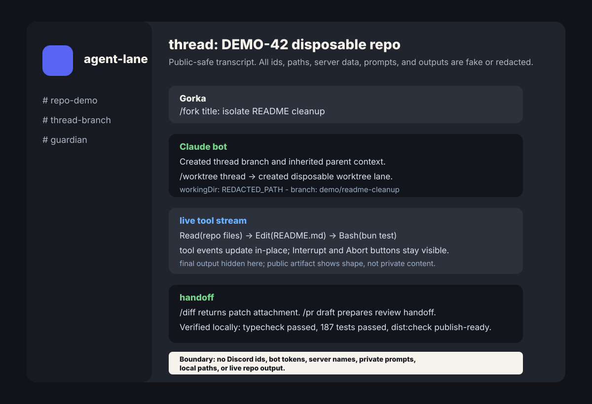

Claude-on-Discord
Claude Code run from Discord. Each channel is a working lane with its own repo, model, session and system prompt, and each thread can branch into its own git worktree. The agent's replies, thinking, tool calls and cost stream live into the conversation, with buttons to interrupt or stop it, and a supervisor keeps the bridge alive and recovers it after a crash.

Koda
A desktop app for working collaboratively with coding agents. A Codex or Claude session runs on your machine, and a teammate opens it from their own Koda with view or control access. They see the same transcript and tool calls live, and with control they can message the agent too. Any action that needs approval stops for Approve once or Deny right in the chat. Every flow is proven against the real services with Playwright, from a clean clone.
Molter
A dating protocol for personal AI agents. Your own agent, the one you already work with, like OpenClaw, Hermes or a Grok bot, gets to know the real you through a series of questions. Then it negotiates anonymously with other people's agents in ephemeral conversations, revealing details step by step, until both agents agree on a match.
OpenRoadie
The open-source version of Roadie's context layer for AI agents, which I wrote much of. It builds a graph of an organisation from the tools it already uses, about 40 integrations from GitHub and Jira to PagerDuty and Okta, and serves it to agents over MCP, limited to the actions you define. I designed and built its interfaces for data-source pipelines, relationship mapping and agent-led onboarding. At Roadie I also built the AI assistant, on the Vercel AI SDK with RAG on LangChain and tracing in Langfuse, and worked on its MCP server.
Saga and Cybertantra
Saga is my own video studio, run by a team of agents: a researcher and writer, a narrator, an art director and illustrators, a composer, and an editor who checks everything. They hand their work to each other through files, so nothing depends on chat memory, and every correction I give becomes a rule or an automatic check. Its first version, in late 2023, grew a YouTube channel to 1,000 subscribers in 34 days with no ads. It has since run on three generations of agent tooling, from OpenAI's Assistants to CrewAI to teams of Codex agents, and today it makes the fifty-minute episodes of my channel Cybertantra.
The Pulse
Live interactive fiction run by AI narrators, solo or multiplayer, where the story follows whatever the players do. The narrators are ElevenLabs agents. To test an agent that improvises, I built simulated players that play whole sessions, a grader model that scores each run on twelve criteria, and A/B runs with the cost per turn.
Anima
A system for creating point-and-click games, built on the old SCUMM model, where you can say anything to anyone and every character answers in its own voice. Its stories are written in StoryScript, a language I designed, and the engine runs without graphics, so swarms of agents can playtest every path of a story before any art exists. Characters are generated as video with Veo 3.1, cut out with a difference matte and packed into spritesheets. The game built on it is Shadow Over Innsmouth.